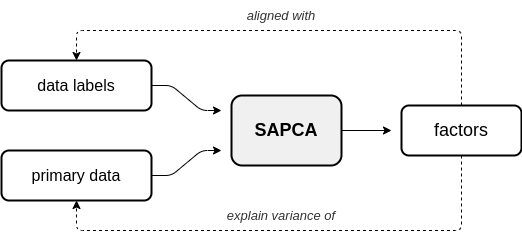
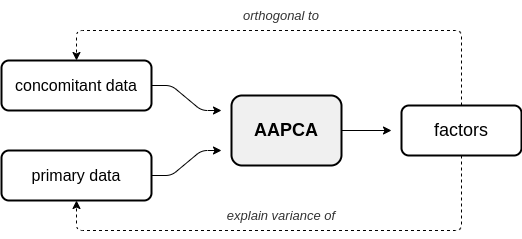
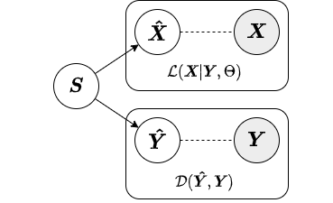
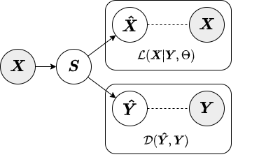

Models
In this section, a more detailed description of the offered AugmentedPCA models and inference strategies is provided.
Supervised AugmentedPCA
In supervised AugmentedPCA (SAPCA), the augmenting objective is to make the factors aligned with the data labels, or some outcome, in addition to having the factors explain the variance of the original observed or primary data. SAPCA is useful when predictivity of latent components with respects to a set of data labels or outcomes is desired. SAPCA is equivalent to a supervised autoencoder (SAE) with a single hidden layer. Therefore, SAPCA can be applied to situations where the properties of latent representations enforced via deep SAEs are desired, yet where limited data or training inconsistencies are a concern. Below is a diagram depicting the relationship between primary data, supervision data, and the resulting SAPCA factors.
Adversarial AugmentedPCA
In adversarial AugmentedPCA (AAPCA), the augmenting objective is to make the factors orthogonal to a set of concomitant data, in addition to having the factors explain the variance of the original observed or primary data. AAPCA can be used in situations where one wishes to enforce invariance of latent components to a set of concomitant data, and is equivalent to an adversarial autoencoder with a single hidden layer. Below is a diagram depicting the relationship between primary data, concomitant data, and the resulting AAPCA factors.
Approximate Inference Strategies
In this section, we give a brief overview of the different approximate inference strategies offered for AugmentedPCA models. Inference strategy should be chosen based on the data on which the AugmentedPCA model will be used as well as the specific use case. Both SAPCA and AAPCA models use the jointly-encoded approximate inference strategy by default.
Local
In the local approximate inference strategy, the factors (local variables associated with each observation) are included in both the likelihood relating and the augmenting objective. Below is a diagram from our paper depicting the local inference strategy.
Because the local variables are included in the augmenting objective, given new data we must have both primary and augmenting data to obtain factors. Thus, the local inference strategy should only be used for inference on new data when both primary and augmenting data are available. Below we show an example of how to fit a SAPCA model with local approximate inference strategy to training data and obtain factors for test data.
# Import numpy
import numpy as np
# Import supervised AugmentedPCA
from apca.models import SAPCA
# Generate synthetic data and labels
n_samp = 100
X = np.random.randn(n_samp, 20)
Y = np.random.randint(low=0, high=1, size=(n_samp, 1), dtype=int)
# Generate test/train splits
train_pct = 0.7
idx = np.arange(start=0, stop=101, step=1, dtype=int)
np.random.shuffle(idx)
n_train = int(train_pct * len(idx))
train_idx = idx[:n_train]
test_idx = idx[n_train:]
# Split data into test/train sets
X_train = X[train_idx, :]
X_test = X[test_idx, :]
Y_train = Y[train_idx, :]
Y_test = Y[test_idx, :]
# Instantiate supervised AugmentedPCA model with local approximate inference strategy
sapca = SAPCA(n_components=3, mu=5.0, inference='local')
# Fit supervised AugmentedPCA model
sapca.fit(X=X_train, Y_train)
# Generate components for test set
# Note: both primary and augmenting data are needed to obtain factors
S_test = sapca.transform(X=X_test, Y=Y_test)
Note
The local approximate inference strategy requires both primary and augmenting data at test time. Therefore, when
factors are generated for the test set, the transform() method requires both the primary data
X_test and augmenting data Y_test be passed as parameters. For a more in-depth description of
the local approximate inference strategy, see the paper introducing the AugmentedPCA package.
Encoded
In the encoded approximate inference strategy, a linear encoder is used to transform the data into factors or components. This inference strategy is termed “encoded” because the augmenting objective is enforced via an encoding function. Below is a diagram depicting the encoded inference strategy.
In contrast to the local inference strategy, when factors are generated for the test set under the encoded inference
strategy the transform() method only requires the primary data X_test. Below we show an example of
how to fit a SAPCA model with encoded approximate inference strategy to training data and obtain factors for test data.
# Instantiate supervised AugmentedPCA model model with encoded approximate inference strategy
sapca = SAPCA(n_components=3, mu=5.0, inference='encoded')
# Fit supervised AugmentedPCA model
# Note: both primary and augmenting data are required to fit the model
sapca.fit(X=X_train, Y_train)
# Generate components for test set
# Note: only primary data are needed to obtain factors
S_test = sapca.transform(X=X_test)
For a more in-depth description of the encoded approximate inference strategy, see the paper introducing the AugmentedPCA package.
Jointly-Encoded
The jointly-encoded approximate inference strategy is similar to the encoded in that the augmenting objective is enforced through a linear encoding matrix. However, in the jointly-encoded inference strategy both the primary and augmenting data are required for computing factors, similar to the local inference strategy. Below is a diagram depicting the jointly-encoded inference strategy.

Similar to the local inference strategy, when factors are generated for the test set under the jointly-encoded
inference strategy the transform() method requires both the primary data X_test and augmenting data
Y_test. Below we show an example of how to fit a SAPCA model with jointly-encoded approximate inference
strategy to training data and obtain factors for test data.
# Instantiate supervised AugmentedPCA model model with encoded approximate inference strategy
sapca = SAPCA(n_components=3, mu=5.0, inference='joint')
# Fit supervised AugmentedPCA model
# Note: both primary and augmenting data are required to fit the model
sapca.fit(X=X_train, Y_train)
# Generate components for test set
# Note: both primary and augmenting data are needed to obtain factors
S_test = sapca.transform(X=X_test, Y=Y_test)
Note
The jointly-encoded approximate inference strategy requires both primary and augmenting data at test time.
Therefore, when factors are generated for the test set, the transform() method requires both the
primary data X_test and augmenting data Y_test be passed as parameters.